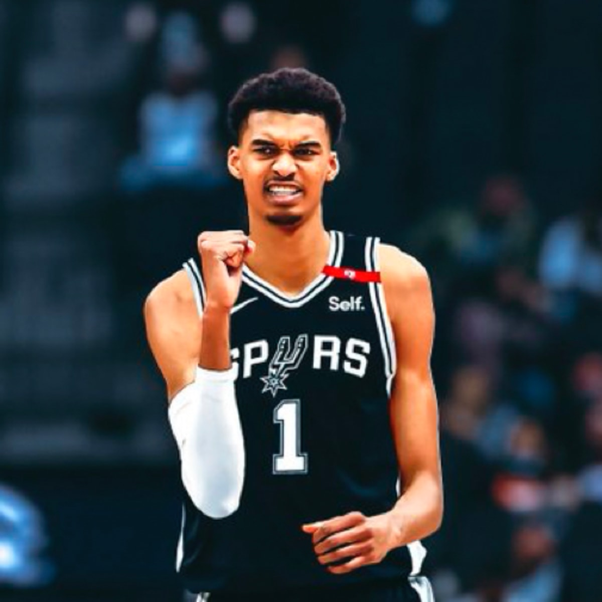

Let's Go SPURS !
聖安東尼奧馬刺（San Antonio
Spurs）是一支位於美國德克薩斯州聖安東尼奧的職業籃球隊，他們是NBA（National
Basketball
Association）聯盟的一部分。馬刺隊成立於1967年，是NBA歷史上最成功的球隊之一，以出色的球隊管理、傳統的團隊籃球風格和多次的總冠軍奪冠成就而聞名。
馬刺隊以強調傳統的團隊籃球風格而聞名，他們注重團隊合作、防守和基本籃球技巧。這種風格使他們在NBA長期保持競爭力並成為球迷喜愛的球隊之一。無論是在球場上還是在球場外，馬刺隊都以其獨特的文化和價值觀著稱，這使他們成為NBA中的一個特別存在。
Nominated Players : Victor Wembanyama / Keldon Johnson / Jeremy Sochan
/ Devin Vessell / Tre Jones
